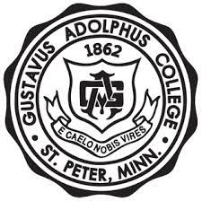
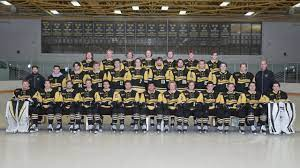
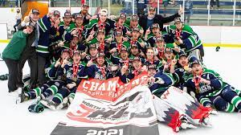
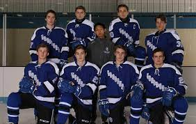
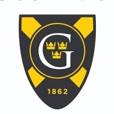

Jac is currently a sophomore at Gustavus Adolphus College
The purpose of a Gustavus education is to help its students attain their full potential as persons, to develop in them a capacity and passion for lifelong learning, and to prepare them for fulfilling lives of leadership and service in society.
1. MCS-287 Principles of Programming Languages
Grade: A
2. MCS-210 Computing in Society
Grade: A
3. REL-210 The New Testament
Grade: A
4. CLA-240 How Civilizations Collapse
Grade: A
Jac Started skating when he was very young, skating in his
backyard rink that his dad built. He would go on to play youth hockey in his hometown
of Woodbury, MN. He would move on to play high school hockey for Woodbury High School.
After High School he would move on to play Junior Hockey in the NA3HL for the North Iowa Bulls.
While there he would have success he has never seen. In his first year there, he had more
points and team wins than any other season prior. in his second season he would go on to
be an important part of the national championship winning team in North Iowa scoring a decisive
goal late in the first period before being injured later in the game. After that year he would move on to
the next level to play college hockey at GAC.
You can find statistics for part of his career here at EP
   